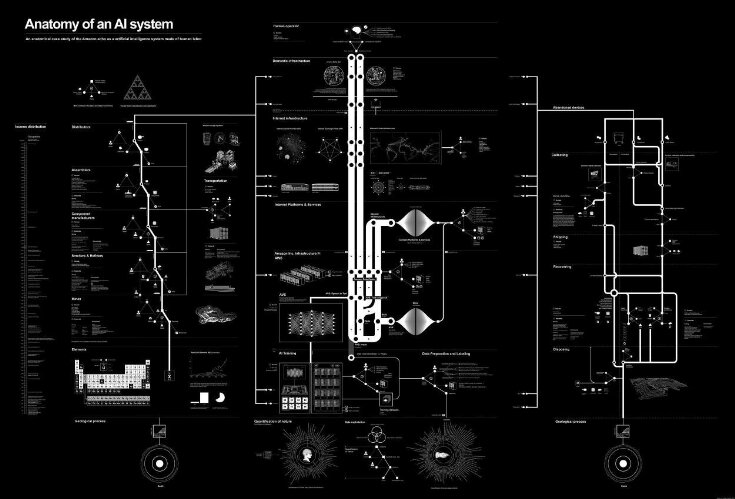

El documento proporciona una descripción detallada de los diversos componentes y actores involucrados en la creación y uso de Amazon Echo, como los materiales brutos utilizados para fabricarlo, el trabajo necesario para ensamblarlo y enviarlo, y los datos recopilados y procesados por el sistema de IA.
A través de este análisis, Crawford destaca la preocupación por el impacto ambiental, la explotación laboral y la privacidad de los datos que son inherentes al desarrollo y uso de sistemas de IA. El documento enfatiza la necesidad de prácticas de desarrollo de IA más transparentes y éticas que tengan en cuenta todo el ecosistema en el que operan estos sistemas.
En resumen, "Anatomy of an AI System" proporciona una visión valiosa de la naturaleza compleja e interconectada de los sistemas de IA y las implicaciones sociales que conlleva su creación y uso.
The Uncomfortable es una serie de objetos domésticos poco prácticos de la arquitecta radicada en Atenas, Katerina Kamprani. Cada objeto es creado a partir del mismo material con el que sería construido de forma normal, haciendo que las copas de vino siamesas o las tazas de desayuno entrelazadas sean más divertidas. Habitualmente, antes de crear el objeto físico, Kamprani crea un modelo 3D para probar su forma. La diseñadora logra inutilizar con toques de humor y estilo objetos tan cotidianos como una silla, una regadera.
Los objetos análogos (creados por el humano) son objetos tecnológicos, al igual que la inteligencia artificial, por lo que ambas son igual de imperfectas.
Por mucho que los sistemas de IA sean creados para automatizar tareas que hacen los seres humanos, también se equivocan, ya que dependen del trabajo humano en varias etapas del proceso, como la recopilación y etiquetado de datos, el diseño y desarrollo de modelos, y el mantenimiento y actualización de los sistemas. Pero al igual que las cosas análogas que uno las va perfeccionando con los errores. Esto pasa dado que el algoritmo va mejorando con el tiempo, por ejemplo mientras las personas le van preguntando cosas, este va mejorando sus respuestas, al igual que las cosas análogas ya que uno las va perfeccionando con los errores que se van cometiendo.
"The Uncomfortable" es un proyecto que presenta diseños de objetos cotidianos modificados de manera deliberada para ser incómodos o disfuncionales. Kamprani busca desafiar nuestras expectativas sobre cómo deberían funcionar las cosas y cuestionar los presupuestos subyacentes en su diseño. De manera similar, "Anatomía de un Sistema de IA" analiza las estructuras y componentes de los sistemas de inteligencia artificial desde una perspectiva crítica. Crawford y Joler examinan los factores éticos, sociales y políticos que están presentes en la creación y el funcionamiento de los sistemas de IA, y destacan cómo estos sistemas pueden perpetuar sesgos y desigualdades.
En este ultimo, se menciona que Alexa reemplaza las acciones de las personas por acciones automáticas, lo que hace que desvaloricemos las cosas y anhelemos y deseemos cada vez más la tecnología, ya que “nos facilita la vida”.
En ambos se revela una desconexión entre el diseño humano y la experiencia real. "The Uncomfortable" muestra el choque entre nuestras expectativas de uso y la realidad disfuncional, "Anatomía de un Sistema de IA" pone de manifiesto cómo los sistemas de IA pueden estar construidos sobre supuestos erróneos y generar resultados no deseados o injustos.